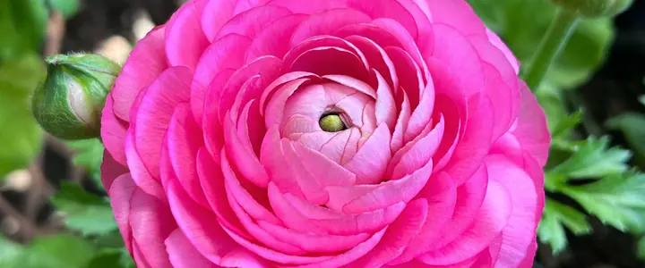

When to plant · 13 plants
Flowers
Cut flowers, easy annuals and spring bulbs that thrive here. Pick one for its dates in your town and how to grow it.
- DahliasModerate
- SunflowersEasy
- ZinniasEasy
- Sweet peasModerate
- TulipsEasy
- DaffodilsEasy
- PeoniesEasy
- CosmosEasy
- NasturtiumsEasy
- MarigoldsEasy
- CalendulaEasy
- SnapdragonsModerate
- RanunculusTricky here


Planting order
When each one first goes in around Portland, starting indoors where that comes first. Colder towns run later.
- Late winter
- Snapdragons
- Early spring
- Sweet peas, Cosmos, Marigolds, Calendula, Ranunculus
- Late spring
- Dahlias, Sunflowers, Zinnias, Nasturtiums
Planting windows at a glance
Main planting window in five reference towns. Each plant's page has every town.
| Plant | Portland | Seattle and Tacoma | Bend and Redmond | Spokane | Boise and Meridian |
|---|---|---|---|---|---|
| Dahlias | May 15 – Jun 12 | May 15 – Jun 12 | Jun 9 – Jul 7 | May 20 – Jun 17 | May 1–29 |
| Sunflowers | May 10 – Jun 21 | May 10 – Jun 21 | Jun 16 – Jul 28 | May 15 – Jun 26 | May 1 – Jun 12 |
| Zinnias | May 10 – Jun 21 | May 10 – Jun 21 | Jun 16 – Jul 28 | May 15 – Jun 26 | May 1 – Jun 12 |
| Sweet peas | Mar 1 – Apr 5 | Mar 1 – Apr 5 | Apr 28 – Jun 2 | Apr 1 – May 6 | Mar 20 – Apr 24 |
| Tulips | Oct 1 – Nov 15 | Oct 1 – Nov 15 | Sep 20 – Oct 20 | Sep 25 – Oct 31 | Oct 1 – Nov 1 |
| Daffodils | Oct 1 – Nov 15 | Oct 1 – Nov 15 | Sep 20 – Oct 20 | Sep 25 – Oct 31 | Oct 1 – Nov 1 |
| Peonies | Oct 1 – Nov 15 | Oct 1 – Nov 15 | Sep 20 – Oct 20 | Sep 25 – Oct 31 | Oct 1 – Nov 1 |
| Cosmos | May 10 – Jun 21 | May 10 – Jun 21 | Jun 16 – Jul 28 | May 15 – Jun 26 | May 1 – Jun 12 |
| Nasturtiums | May 10 – Jun 21 | May 10 – Jun 21 | Jun 16 – Jul 28 | May 15 – Jun 26 | May 1 – Jun 12 |
| Marigolds | May 15 – Jun 19 | May 15 – Jun 19 | Jun 9 – Jul 14 | May 20 – Jun 24 | May 1 – Jun 5 |
| Calendula | Mar 15 – May 3 | Mar 15 – May 3 | May 12 – Jun 30 | Apr 15 – Jun 3 | Apr 1 – May 20 |
| Snapdragons | Mar 15 – Apr 26 | Mar 15 – Apr 26 | May 12 – Jun 23 | Apr 15 – May 27 | Apr 1 – May 13 |
| Ranunculus | Mar 15 – Apr 19 | Mar 15 – Apr 19 | May 12 – Jun 16 | Apr 15 – May 20 | Apr 1 – May 6 |
Growing flowers in the Northwest
Flowers fall into three groups by timing. Spring bulbs such as tulips and daffodils are planted in fall, once the soil cools. Dahlias are tender tubers planted in spring once the soil warms and dug or mulched for winter. Annuals like zinnias, cosmos, sunflowers and sweet peas grow from seed each year, and ranunculus grow from small corms planted in early spring.
Sweet peas are a cool-season flower that does especially well in the Northwest; sow them early in spring. Zinnias and sunflowers are the opposite and want warm soil, so wait. Dahlias are a regional favorite, but their tubers rot in cold, waterlogged ground, which is why west-side gardeners often wait until the soil has warmed and lift the tubers in heavy soils for winter.
Most cut flowers bloom more the more you cut them, and deadheading spent flowers keeps annuals going. Slugs love young dahlia and zinnia shoots, so protect them early. Daffodils and sunflowers are the easiest places to start; deer and rodents leave daffodils alone.
Three groups
Garden flowers fall into three timing groups. Hardy annuals like sweet peas, calendula and snapdragons handle cool weather and go in early. Tender annuals like zinnias, cosmos, marigolds and sunflowers wait for warm soil after frost. Bulbs and tubers, from tulips and daffodils in fall to dahlias and ranunculus in spring, follow their own calendars.
Soil and sun
Most flowers here want full sun and soil that drains well. Bulbs rot in waterlogged ground, so plant them in raised or sloping spots in heavy, rainy soils. A little compost at planting is enough for most annuals; too much fertilizer gives leaves instead of flowers.
More flowers for longer
Cutting flowers regularly, or removing faded ones, keeps many annuals blooming. Sowing zinnias, cosmos and sunflowers in two or three batches a few weeks apart gives flowers into fall. In cold areas, dahlias are often dug and stored after the first frost; on the mild west side many are left in the ground under mulch.
Side by side
How easy each one is, the sun it needs and how far apart to plant. Tap one for its dates and growing guide.
- DahliasModerate Full sun 18 to 24 inches apart
- SunflowersEasy Full sun 6 inches (small types) to 24 inches (giants) apart
- ZinniasEasy Full sun 9 to 12 inches apart
- Sweet peasModerate Full sun 4 to 6 inches apart along a trellis
- TulipsEasy Full sun 4 to 6 inches apart
- DaffodilsEasy Full sun to part shade 4 to 6 inches apart
- PeoniesEasy Full sun 3 feet apart
- CosmosEasy Full sun 12 inches apart
- NasturtiumsEasy Full sun to part shade 10 to 12 inches apart
- MarigoldsEasy Full sun 8 to 12 inches apart (French); 12 to 18 inches (African)
- CalendulaEasy Full sun to light shade 10 to 12 inches apart
- SnapdragonsModerate Full sun 9 to 12 inches apart

RanunculusTricky here Full sun 6 to 9 inches apart
Common questions
When should I plant tulips and daffodils?
In fall, once the soil cools, usually October and November on the west side and a few weeks earlier east of the Cascades. They need winter chill to bloom.
When can I plant dahlias?
After the soil warms in spring, usually May on the west side. Tubers rot in cold, wet soil, so don't rush them.
Which flowers are easiest to grow from seed?
Zinnias, cosmos, sunflowers, calendula and nasturtiums. Sow calendula in spring while it's still cool; wait for warm soil for the others.
Guides for these plants
 Growing Dahlias in the NorthwestDahlias thrive in Northwest summers if you get the timing and drainage right. Here's when to plant tubers, how to care for them, and what to do in winter.
Growing Dahlias in the NorthwestDahlias thrive in Northwest summers if you get the timing and drainage right. Here's when to plant tubers, how to care for them, and what to do in winter. Native Plants for a Northwest Pollinator GardenNative shrubs and flowers that feed bees, butterflies and hummingbirds from late winter to fall, and how to plant for pollinators in Northwest gardens.
Native Plants for a Northwest Pollinator GardenNative shrubs and flowers that feed bees, butterflies and hummingbirds from late winter to fall, and how to plant for pollinators in Northwest gardens.
Other plant types
- Salad greens
- Cabbage family
- Root vegetables
- Onion family
- Peas and beans
- Tomatoes and summer crops
- Squash, cucumbers and melons
- Herbs
- Berries
- Perennial vegetables
- Fruit and nut trees
- Native plants